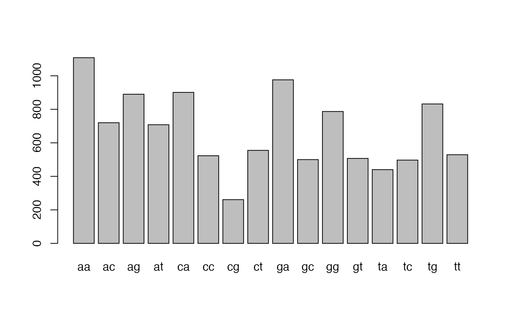
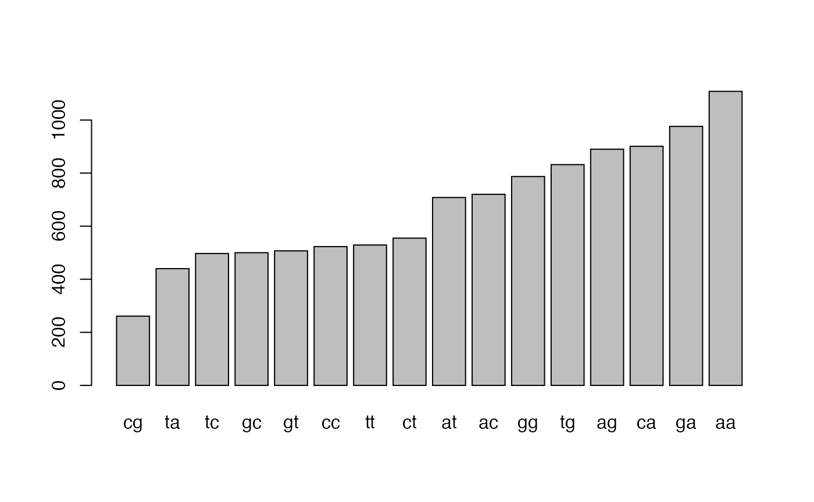
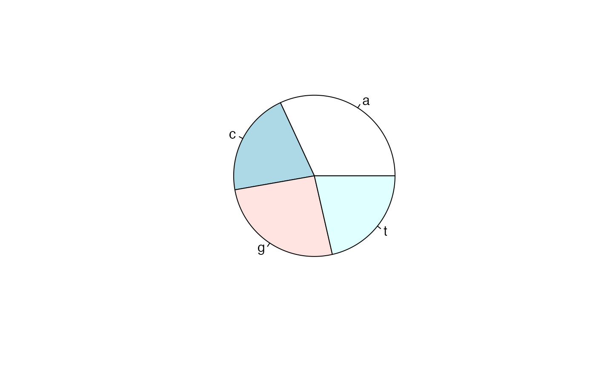

ddd-ac-h-DNA_sequence_descriptive_stats-AC03-02-.Rmd
library(compbio4all)Some of the biology in this tutorial appears to be out of date. Specifically, research on the biological basis of unusual frequencies of DNA “words” does not appear to be much current interest in bioinformatics and genomics. (In contrast, methylation of bases within certain DNA words is being worked on.) The examples are still good for practicing R skills.
In a previous exercise we downloaded and examined DNA sequence in the FASTA format. The sequence we worked with is actually stored as a data file within this package and can be brought into memory using the data() command
data("dengueseq_fasta")We can look at this with the str() command
This isn’t in a format we can actually work with so we’ll use the function fasta_cleaner()
header. <- ">NC_001477.1 Dengue virus 1, complete genome"
dengueseq_vector <- fasta_cleaner(dengueseq_fasta)Now check it out.
str(dengueseq_vector)
#> chr [1:10735] "A" "G" "T" "T" "G" "T" "T" "A" "G" "T" "C" "T" "A" "C" "G" ...What we have here is each base of the sequence in a seperate slot of our vector.
The first four bases are “AGTT”
We can see the first one like this
dengueseq_vector[1]
#> [1] "A"The second one like this
dengueseq_vector[2]
#> [1] "G"The first and second like this
dengueseq_vector[1:2]
#> [1] "A" "G"and all four like this
dengueseq_vector[1:4]
#> [1] "A" "G" "T" "T"Once you have retrieved a DNA sequence, we can obtain some simple statistics to describe that sequence, such as the sequence’s total length in nucleotides. In the above example, we retrieved the DEN-1 Dengue virus genome sequence, and stored it in the vector variable dengueseq_vector To obtain the length of the genome sequence, we would use the length() function, typing:
length(dengueseq_vector)
#> [1] 10735The length() function will give you back the length of the sequence stored in variable dengueseq_vector, in nucleotides. The length() function actually gives the number of elements (slots) in the input vector that you passed to it, which in this case in the number of elements in the vector dengueseq_vector. Since each element of the vector dengueseq_vector contains one nucleotide of the DEN-1 Dengue virus sequence, the result for the DEN-1 Dengue virus genome tells us the length of its genome sequence (ie. 10735 nucleotides long).
An obvious first analysis of any DNA sequence is to count the number of occurrences of the four different nucleotides (“A”, “C”, “G”, and “T”) in the sequence. This can be done using the the table() function. For example, to find the number of As, Cs, Gs, and Ts in the DEN-1 Dengue virus sequence (which you have put into vector variable dengueseq_vector, using the commands above), you would type:
table(dengueseq_vector)
#> dengueseq_vector
#> A C G T
#> 3426 2240 2770 2299This means that the DEN-1 Dengue virus genome sequence has 3426 As occurring throughout the genome, 2240 Cs, and so forth.
One of the most fundamental properties of a genome sequence is its GC content, the fraction of the sequence that consists of Gs and Cs, ie. the %(G+C).
The GC content can be calculated as the percentage of the bases in the genome that are Gs or Cs. That is, GC content = (number of Gs + number of Cs)100/(genome length). For example, if the genome is 100 bp, and 20 bases are Gs and 21 bases are Cs, then the GC content is (20 + 21)100/100 = 41%.
You can easily calculate the GC content based on the number of As, Gs, Cs, and Ts in the genome sequence. For example, for the DEN-1 Dengue virus genome sequence, we know from using the table() function above that the genome contains 3426 As, 2240 Cs, 2770 Gs and 2299 Ts. Therefore, we can calculate the GC content using the command:
(2240+2770)*100/(3426+2240+2770+2299)
#> [1] 46.66977Alternatively, if you are feeling lazy, you can use the GC() function in the SeqinR package, which gives the fraction of bases in the sequence that are Gs or Cs.
seqinr::GC(dengueseq_vector)
#> [1] 0.4666977The result above means that the fraction of bases in the DEN-1 Dengue virus genome that are Gs or Cs is 0.4666977. To convert the fraction to a percentage, we have to multiply by 100, so the GC content as a percentage is 46.66977%.
As well as the frequency of each of the individual nucleotides (“A”, “G”, “T”, “C”) in a DNA sequence, it is also interesting to know the frequency of longer DNA words, also referred to as genomic words. The individual nucleotides are DNA words that are 1 nucleotide long, but we may also want to find out the frequency of DNA words that are 2 nucleotides long (ie. “AA”, “AG”, “AC”, “AT”, “CA”, “CG”, “CC”, “CT”, “GA”, “GG”, “GC”, “GT”, “TA”, “TG”, “TC”, and “TT”), 3 nucleotides long (eg. “AAA”, “AAT”, “ACG”, etc.), 4 nucleotides long, etc.
To find the number of occurrences of DNA words of a particular length, we can use the count() function from the R SeqinR package.
The count() function only works with lower-case letters, so first we have to use the tolower() function to convert our upper class genome to lower case
dengueseq_vector <-tolower(dengueseq_vector)Now we can look for words. For example, to find the number of occurrences of DNA words that are 1 nucleotide long in the sequence dengueseq_vector, we type:
seqinr::count(dengueseq_vector, 1)
#>
#> a c g t
#> 3426 2240 2770 2299As expected, this gives us the number of occurrences of the individual nucleotides. To find the number of occurrences of DNA words that are 2 nucleotides long, we type:
seqinr::count(dengueseq_vector, 2)
#>
#> aa ac ag at ca cc cg ct ga gc gg gt ta tc tg tt
#> 1108 720 890 708 901 523 261 555 976 500 787 507 440 497 832 529Note that by default the count() function includes all overlapping DNA words in a sequence. Therefore, for example, the sequence “ATG” is considered to contain two words that are two nucleotides long: “AT” and “TG”.
If you type help(‘count’), you will see that the result (output) of the function count() is a table object. This means that you can use double square brackets to extract the values of elements from the table. For example, to extract the value of the third element (the number of Gs in the DEN-1 Dengue virus sequence), you can type:
denguetable_2 <- seqinr::count(dengueseq_vector,2)
denguetable_2[[3]]
#> [1] 890The command above extracts the third element of the table produced by count(dengueseq_vector,1), which we have stored in the table variable denguetable.
Alternatively, you can find the value of the element of the table in column “g” by typing:
denguetable_2[["aa"]]
#> [1] 1108Once you have table you can make a basic plot
barplot(denguetable_2)
We can sort by the number of words using the sort() command
sort(denguetable_2)
#>
#> cg ta tc gc gt cc tt ct at ac gg tg ag ca ga aa
#> 261 440 497 500 507 523 529 555 708 720 787 832 890 901 976 1108Let’s save over the original object
denguetable_2 <- sort(denguetable_2)
barplot(denguetable_2)
R will automatically try to optimize the appearance of the labels on the graph so you may not see all of them; no worries.
R can also make pie charts. Piecharts only really work when there are a few items being plots, like the four bases.
denguetable_1 <- seqinr::count(dengueseq_vector,1)Make a piechart with pie()
pie(denguetable_1)
In this practical, have learned to use the following R functions:
length() for finding the length of a vector or list table() for printing out a table of the number of occurrences of each type of item in a vector or list. These functions belong to the standard installation of R.
You have also learnt the following R functions that belong to the SeqinR package:
GC() for calculating the GC content for a DNA sequence count() for calculating the number of occurrences of DNA words of a particular length in a DNA sequence
This is a modification of “DNA Sequence Statistics (1)” from Avril Coghlan’s A little book of R for bioinformatics.. Almost all of text and code was originally written by Dr. Coghlan and distributed under the Creative Commons 3.0 license.
In “A little book…” Coghlan noted: “Many of the ideas for the examples and exercises for this chapter were inspired by the Matlab case studies on Haemophilus influenzae (www.computational-genomics.net/case_studies/haemophilus_demo.html) and Bacteriophage lambda (http://www.computational-genomics.net/case_studies/lambdaphage_demo.html) from the website that accompanies the book Introduction to Computational Genomics: a case studies approach by Cristianini and Hahn (Cambridge University Press; www.computational-genomics.net/book/).”
Answer the following questions, using the R package. For each question, please record your answer, and what you typed into R to get this answer.
Model answers to the exercises are given in Answers to the exercises on DNA Sequence Statistics (1).